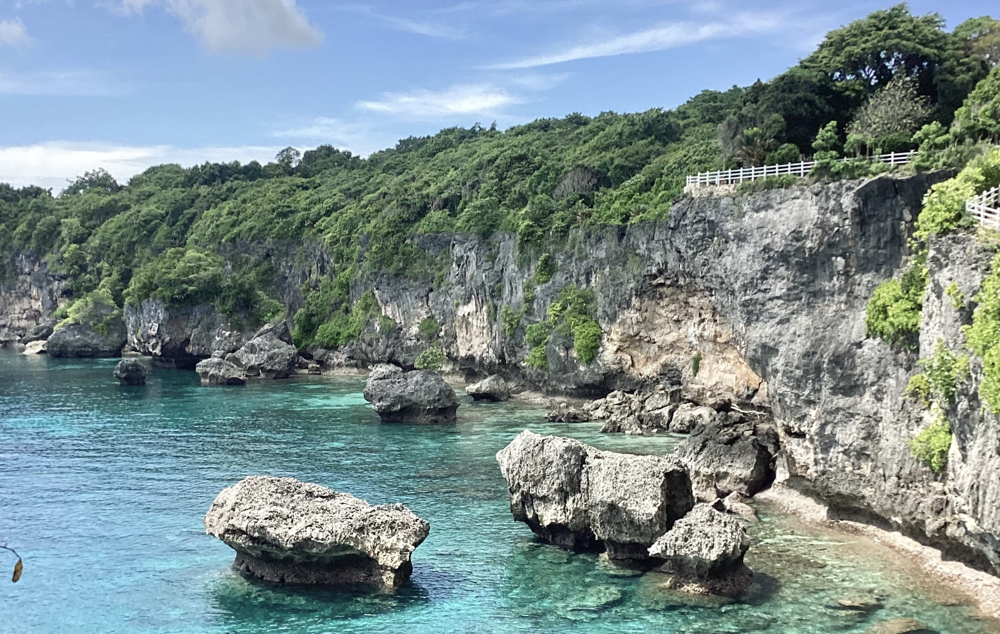
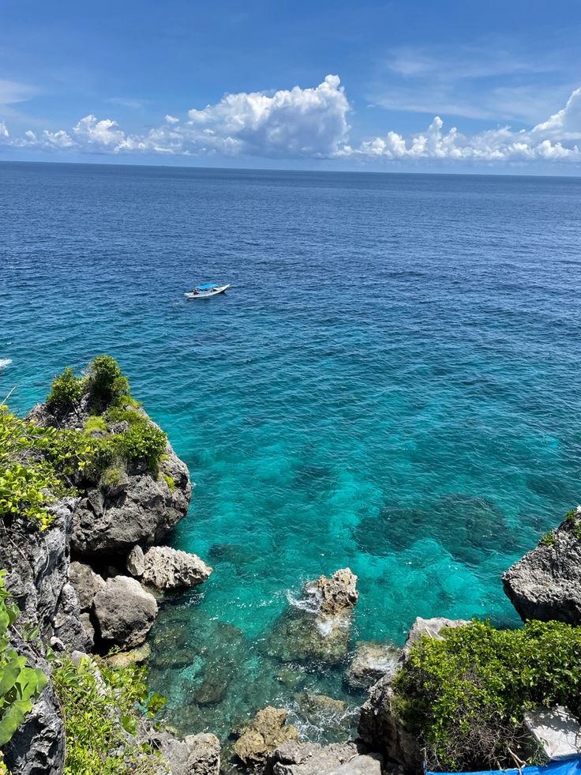
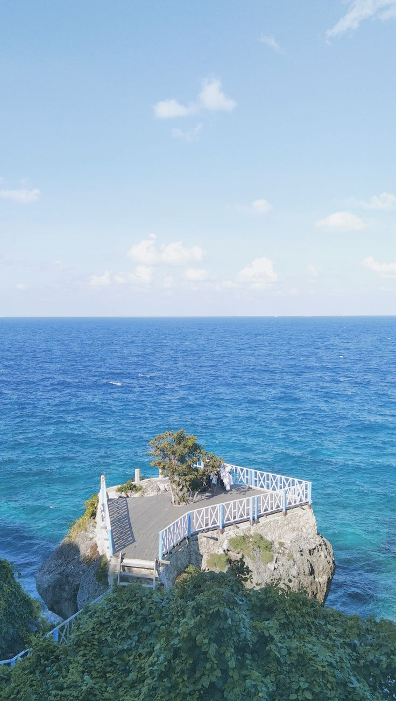

Bira Beach
Explore the Blue of Bulukumba
Tentang
Pantai Tanjung Bira merupakan salah satu destinasi wisata bahari yang berada di Kabupaten Bulukumba, Sulawesi Selatan. Pantai ini dikenal dengan hamparan pasir putih yang lembut dan air laut yang jernih dengan warna biru yang khas. Bagi pengunjung, Bira dapat menjadi tempat untuk menikmati suasana pantai, bermain di tepi laut, menikmati matahari terbenam, maupun menjelajahi berbagai aktivitas bahari.
Galeri
Berikut adalah beberapa foto dari Pantai Tanjung Bira:



Aktivitas
Di Pantai Tanjung Bira, pengunjung dapat menikmati berbagai aktivitas maupun bersantai di tepi pantai sambil menikmati pemandangan matahari terbenam yang indah.
| Aktivitas | Deskripsi |
|---|---|
| Bermain di Pantai | Menikmati pasir putih, berjalan di sepanjang pantai, atau bersantai di tepi laut |
| Menikmati Sunset | Menunggu matahari terbenam sambil menikmati pemandangan laut. |
| Berperahu | Menyewa perahu untuk berkeliling pantai dan menikmati pemandangan. |
| Berburu Foto | Mengabadikan pemandangan pantai, laut, dan suasana pesisir. |
Informasi
Berikut adalah beberapa informasi penting terkait Pantai Tanjung Bira:
- Lokasi: Kabupaten Bulukumba, Sulawesi Selatan, Indonesia
- Aksesibilitas: Dapat dicapai dengan kendaraan pribadi atau transportasi umum dari kota terdekat.
- Fasilitas: Tersedia penginapan, restoran, dan penyewaan perahu di sekitar pantai.
- Waktu Terbaik untuk Berkunjung: Musim kemarau (April hingga Oktober) untuk menikmati cuaca yang cerah dan laut yang tenang.
Peta Lokasi
Rencanakan Perjalanan
A day in Pantai Tanjung Bira
Kontak
Untuk informasi lebih lanjut, silakan hubungi:
- Email: info@pantaitanjungbira.com
- Telepon: +62 812 3456 7890